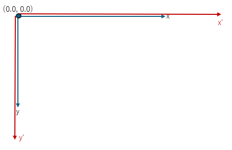

(update:2025/3/22)

座標系を拡大します。
scale()関数では、x軸方向,y軸方向の拡大係数を指定します。
一般にx軸方向の座標系を2倍に拡大すると、元の位置に表示する場合は、座標を２分の１倍します。また、図形の幅や高さを２分の１にする必要があります。y軸方向についても同様です。
| void Cairo::Context::scale( | double | sx, | // x軸方向の拡大係数 |
|---|---|---|---|
| double | sy ) | // y軸方向の拡大係数 |
#include <gtkmm.h>
class Drawing : public Gtk::DrawingArea {
public:
Drawing();
virtual ~Drawing() = default;
protected:
void on_draw(const Cairo::RefPtr<Cairo::Context>& cr, int width, int height);
};
Drawing::Drawing()
{
set_draw_func( sigc::mem_fun( *this, &Drawing::on_draw));
}
void Drawing::on_draw(const Cairo::RefPtr<Cairo::Context>& cr, int width, int height) {
// background
cr->set_source_rgba( 0.0, 0.0, 0.0, 1.0 );
cr->paint();
// scale
cr->set_source_rgba( 1.0, 1.0, 0.5, 1.0 );
cr->set_line_width( 0.5 );
for( int i = 0; i < 10; i++ ) {
cr->rectangle( 10.0, 10.0, 40.0, 40.0 ); // 同じ座標に同じ大きさの正方形を描いている。
cr->scale( 1.2, 1.2 );
}
cr->stroke();
}
class MyWindow : public Gtk::Window
{
public:
MyWindow();
protected:
Drawing my_draw;
};
MyWindow::MyWindow()
{
set_title( "scale up" );
set_default_size( 320, 360 );
set_child( my_draw );
}
int main(int argc, char* argv[]) {
auto app = Gtk::Application::create( "gtkmm4.example" );
return app->make_window_and_run<MyWindow>( argc, argv );
}